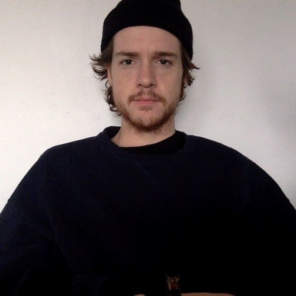

Pictures

About
Homeshake is the solo musical project of Montreal-based singer-songwriter and musician Peter Sagar. Featuring contributions from Mark Goetz, Greg Napier, and Brad Loughead, the project started in 2012. In 2014, he left Mac DeMarco's live band to focus on the Homeshake project. His genre is labeled as hypnagogic pop, synthpop, lo-fi, dream pop, and R&B.